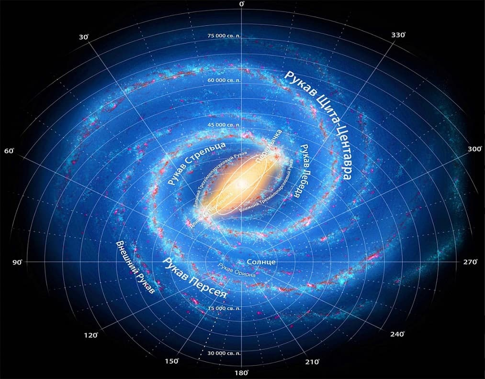

Солнечная система: строение и характеристика
Рассказываем, как устроена звёздная система, в которой мы живём. Какие планеты вращаются вокруг Солнца, что находится в межпланетном пространстве и другие интересные сведения о нашей Солнечной системе.
- планеты, их спутники
- карликовые планеты
- астероиды
- метеороиты
- кометы и космическую пыль
Строение Солнечной системы
В состав солнечной системы входит восемь основных планет и пять карликовых, вращающихся приблизительно в одной плоскости. По своим физическим свойствам планеты делятся на земную группу и планеты-гиганты.
Планеты земной группы относительно небольшие и плотные, состоят из металлов и минералов. К ним относятся:
- Меркурий
- Венера
- Земля
- Марс
Планеты-гиганты во много раз больше других планет, они состоят из газов и льда. Это:
- Юпитер
- Сатурн
- Уран
- Нептун
Орбита Земли делит солнечную систему на две условные области. Во внутренней находятся ближайшие к Солнцу планеты — Меркурий и Венера. Во внешней области — более удалённые от Солнца, чем Земля: Марс, Юпитер, Сатурн, Уран и Нептун.
Пространство между орбитами Марса и Юпитера, а также за Нептуном (пояс Койпера) занимают малые небесные тела: малые планеты и астероиды. Также по пространству Солнечной системы курсируют кометы и потоки метеороидов.
Состав Солнечной системы
- Солнце
- Меркурий
- Расстояние от Солнца:85 млн.км.
- Диаметр: 4879 км
- Продолжительность года: 88 земных суток
- Продолжительность суток: 176 земных суток
- Спутники: нет
- Венера
- Расстояние от Солнца:108 млн.км.
- Диаметр: 12100 км
- Продолжительность года: 225 земных суток
- Продолжительность суток: 243 земных суток
- Спутники: нет
- Земля
- Расстояние от Солнца:150 млн.км.
- Диаметр: 12756 км
- Продолжительность года: 365 суток
- Продолжительность суток: 24 часа
- Спутники:
- Луна
- Марс
- Расстояние от Солнца:228 млн.км.
- Диаметр: 6792 км
- Продолжительность года: 687 земных суток
- Продолжительность суток: 24,6 земных суток
- Спутники:
- Фобос
- Деймос
- Юпитер
- Расстояние от Солнца:778,5 млн.км.
- Диаметр: 142984 км
- Продолжительность года: 11,6 земных лет
- Продолжительность суток: 10 часов
- Спутники:
- Ио
- планета с мощнейшими в системе вулканами.
- Европа
- Ганимед
- Каллисто
- Метида
- 74 небесных тела
- Ио
- Уран
- Расстояние от Солнца:2860 млн.км.
- Диаметр: 51300 км
- Продолжительность года: 84 земных года
- Продолжительность суток: 17,2 земных суток
- Спутники:
- Миранда
- Ариэль
- Умбриэль
- Титания
- Оберион
- 22 небесных тела
- Нептун
- Расстояние от Солнца:4500 млн.км.
- Диаметр: 49500 км
- Продолжительность года: 165 земных суток
- Продолжительность суток: 18 часов
- Спутники:
- Тритон
- Нереида
- Протей
- 11 небесных тел
- Другие объекты Солнечной системы
- Карликовые планеты
- Церера
- Астероиды
- Паллада
- Веста
- Гигея

- Комет
- Метеориды
- Карликовые планеты
Звезда класса «жёлтый карлик». 98% массы Солнца приходится на водород и гелий, но в нём также содержатся все известные химические элементы. Солнце ярче, чем 85% звёзд в галактике, а температура его поверхности превышает 5 700°C.
Солнце почти в 110 раз больше Земли, а его масса в тысячу раз превосходит массу всех планет, вместе взятых. Именно благодаря солнечному свету и теплу на Земле существует жизнь.
Движение объектов солнечной системы
Все объекты солнечной системы вращаются вокруг Солнца по эллиптическим орбитам. Наиболее близкую к Солнцу точку орбиты называют перигелием , а самую удалённую — афелием .
Орбиты планет расположены приблизительно в одной плоскости, поэтому периодически на Земном небе можно наблюдать Парад планет — явление, при котором несколько небесных тел будто бы выстраиваются в одну линию на небольшом угловом расстоянии друг от друга.
Межпланетное пространство
Планеты вращаются не в абсолютной пустоте — пространство между ними заполнено малыми небесными телами, вращающимися по собственным орбитам, блуждающими кометами, потоками метеорных тел и космической пылью.
Кроме того, Солнце излучает мощнейший поток заряженных частиц, называемый «солнечным ветром». Он распространяется по системе с чудовищной скоростью — до 1 200 км/с. Именно солнечный ветер порождает магнитные бури, полярные сияния и радиационные пояса планет.
Расположение Солнечной системы в Галактике
Солнце — одна из 200 миллиардов звёзд Млечного Пути, оно находится в одном из его спиральных рукавов — рукаве Ориона — на расстоянии 27 000 световых лет от центра Галактики.
Как планеты вращаются вокруг Солнца, так и Солнце вращается вокруг центра Галактики. Солнечная система движется сквозь космическое пространство со скоростью в 250 км/с — это в сотни тысяч раз быстрее самого мощного сверхзвукового самолёта.
Полный оборот вокруг центра Млечного Пути солнечная система совершает за 226 миллионов лет — эта величина называется галактическим годом.